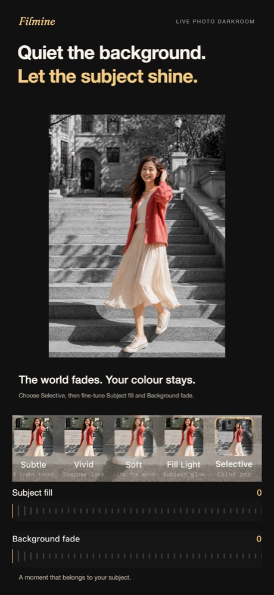

let it develop
A darkroom for
Live Photos.
Film looks, portrait light and paper frames. Developed on your iPhone and saved as a new Live Photo — the motion and the sound stay.


Why a darkroom, not a filter
The still and the motion are one photograph.
Most editors flatten a Live Photo into a still, or change the cover frame and leave the three seconds of video untouched. Press and hold afterwards and the look is gone.
Filmine develops the still and every frame of the video with the same film, the same portrait light and the same paper. Save it, press and hold in Photos, and the moment still moves and sounds — wearing the look you gave it.
- Only Live Photos. The picker shows nothing else. Ordinary stills belong to the Photos app.
- Always a new photo. The original is never modified or deleted.
- Frames that breathe. The paper is part of the picture, so when iOS zooms a Live Photo on press-and-hold, the frame moves with it.
- No account, no upload. Everything happens on the device.
Three rooms
Film looks
Eleven film looks, from soft portraits and warm daylight to cool shadows and black and white. Two dials — intensity and texture — and nothing else to learn.
Portrait light
Subtle, Vivid, Soft, Fill Light or Selective. Bring the subject forward with subject fill and background fade. Every slider starts at zero; there is no “beauty” switch.
Paper frames
Ten papers, each a named object rather than a setting: Polara, INSTAN mini and wide, Card, Signature and more. Try any of them before unlocking.

On your iPhone
Your photos never leave your device.
Filmine has no accounts, no servers, no analytics and no third-party SDKs. The App Store privacy label reads “Data Not Collected”, and the only network traffic the app ever makes is the App Store purchase flow itself.
Read the privacy policy — it is the same text that ships inside the app.
Free to develop.
Film and portrait tools are free. Three papers — no frame, Polara and Signature — export free as well. Eight more papers unlock with a yearly plan or a one-time lifetime purchase; eligible new subscribers get a free week first. Prices are shown in the app.
Guides
Notes from the darkroom.
a moment, kept alive